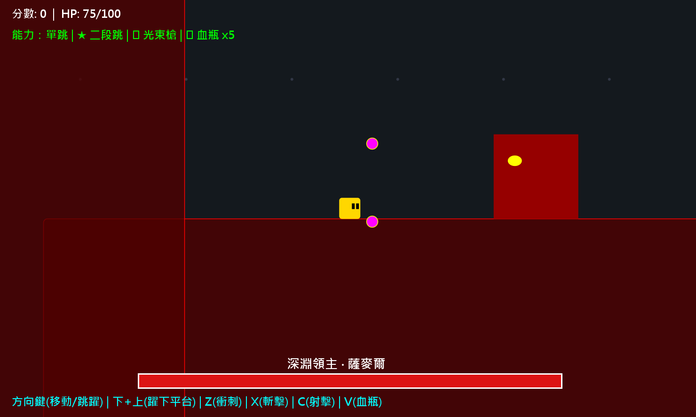
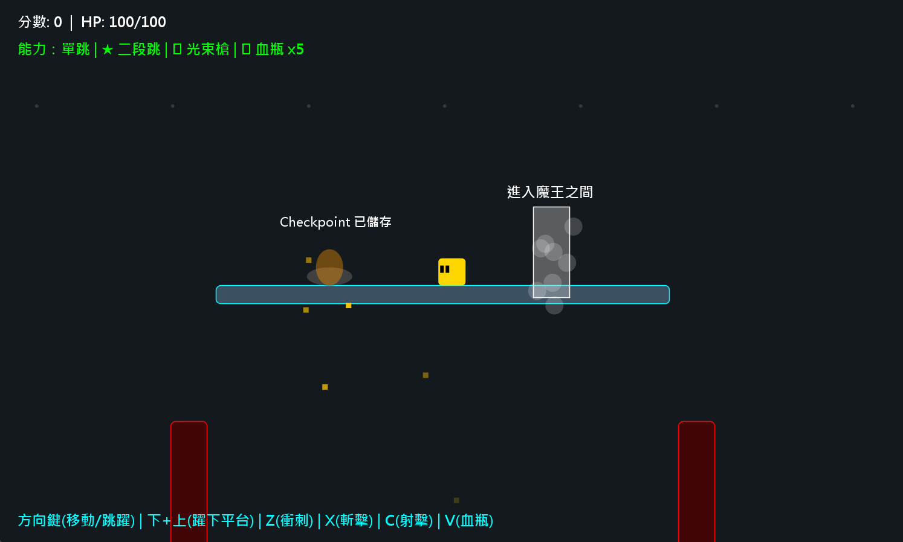
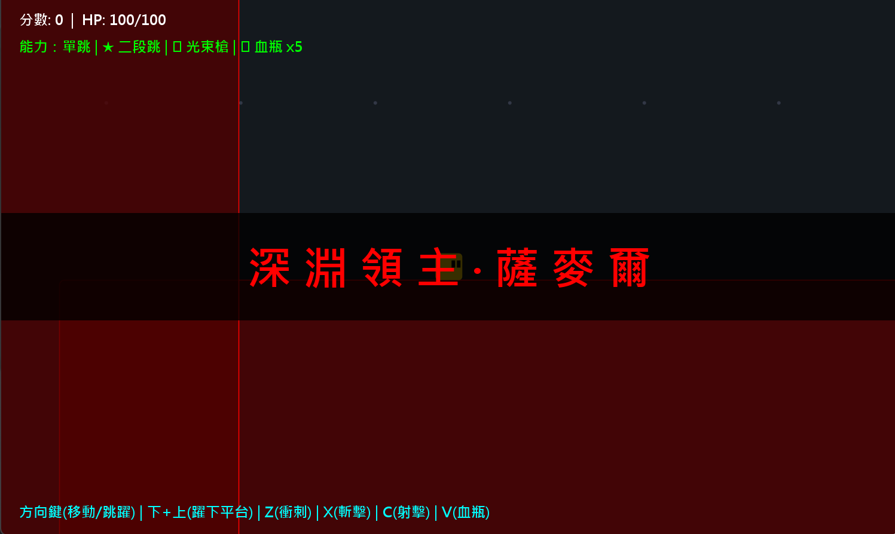
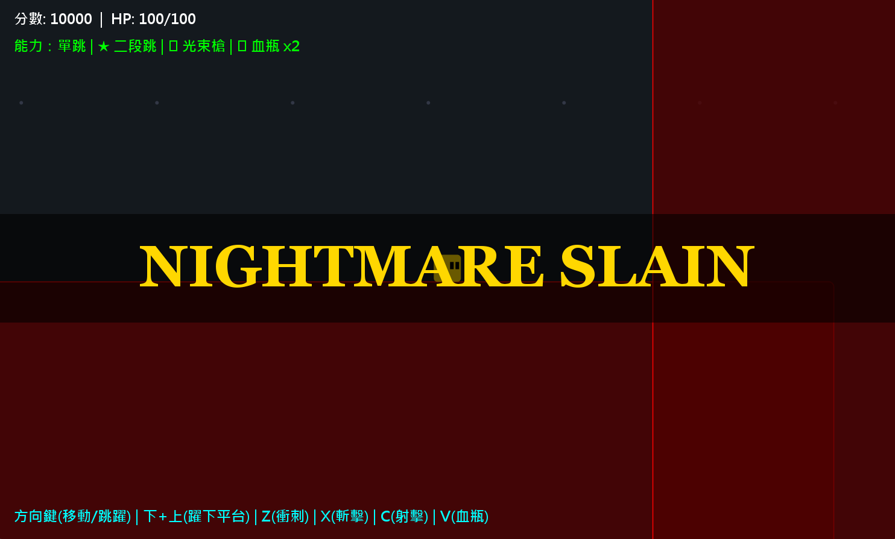
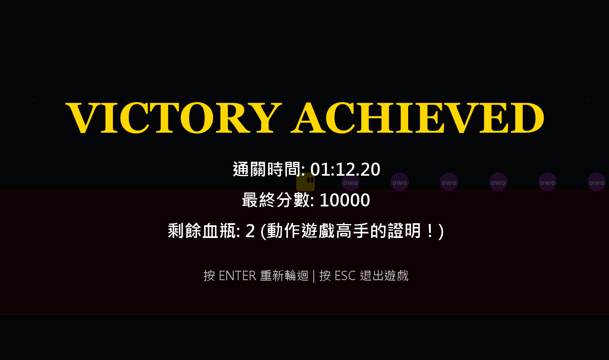

終焉之刃
邊學Java邊做的2D平台跳躍遊戲：一路往上爬，拿到二段跳和光束槍，再挑戰深淵領主。
JavaSwing物件導向





要解決的問題
想邊學Java邊做一個自己想玩的遊戲：玩家一路往上爬，途中取得能力、越過不同平台和敵人，最後挑戰魔王。這是個人練習，沒有課堂作業的題目限制。
怎麼解決
做成2D平台跳躍遊戲，畫面會顯示距離頂峰還有幾公尺。路上有彈跳、移動、易碎和尖刺平台，小怪會衝過來或射子彈。玩家可以取得二段跳和光束槍，並在營火存檔；起點附近也有魔王捷徑，遊戲會提示先拿到能力再去。
進入魔王之間後，挑戰會施放地火、震波和審判之劍的深淵領主·薩麥爾。打贏後先出現NIGHTMARE SLAIN，再進入可以自由攻擊的狂歡紓壓時間，最後顯示通關時間、最終分數和剩餘血瓶。
操作方式：方向鍵移動和跳躍，下加上跳下平台，Z衝刺、X斬擊、C射擊、V喝血瓶。
我負責的部分
- 決定遊戲的點子、玩法和要加入的機制
- 自己反覆試玩，發現問題後請Claude修正，再重新測試
- 自己調整數值，例如魔王血量和技能時間
- 修改部分程式，邊做邊學Java
AI協作
用到的AI工具
- Claude
我做的判斷
- 決定遊戲玩法，並透過試玩指出需要修改的地方
- 自己調整魔王血量、技能時間等數值
AI做的事
- Claude完成整體程式架構，並協助除錯
怎麼驗證
- 由我手動反覆試玩，發現問題叫AI修，修完再玩一次；沒有自動測試
- 提供5張自己試玩時的截圖，記錄魔王入口、出場、戰鬥、擊敗魔王和通關結算
技術筆記
架構
依素材筆記，程式集中在一個Java檔，約1,500行。主畫面使用JPanel（Swing用來顯示介面的面板），由Timer（定時觸發更新的計時器）每16毫秒更新一次再重畫；這是更新設定，沒有實測每秒畫面數。
遊戲分成選單、遊戲中、打贏後的狂歡時間、死亡和結算等狀態。玩家、子彈、斬擊、道具、敵人、魔王和特效都繼承GameObject（共用的遊戲物件類別），每一格輪流呼叫update更新，再畫出來。平台也透過繼承分成彈跳、移動、易碎和尖刺幾種。
做過的決定
- 用不同的遊戲狀態區分選單、遊玩、狂歡時間、死亡與結算
- 讓玩家、攻擊、道具、敵人和特效共用GameObject，平台再透過繼承分出不同種類
- 依照自己的試玩結果調整魔王血量和技能時間；沒有使用自動測試
驗證過的部分
- 素材筆記記錄由我反覆手動試玩，發現問題後請Claude修正，再重新試玩
- 5張真實截圖記錄了魔王入口、出場、戰鬥、NIGHTMARE SLAIN和通關結算；結算顯示這一次試玩的時間01:12.20、分數10000、剩餘血瓶2
- 原始碼沒有公開，這次作品頁整理只核對素材筆記與截圖，沒有重新編譯或執行遊戲
還沒做到的
- 補上可重現的測試紀錄，逐項記錄平台、能力、存檔點與魔王攻擊的驗證結果
- 為遊戲狀態切換、碰撞和數值計算加入自動測試，補足目前只靠手動試玩的驗證方式
- 若要量測實際畫面更新速度，需要另外測試，不能把Timer的16毫秒設定當成實測結果
來源與授權
內容來源
- 自己建立：自己做好玩的遊戲，不是課堂作業。點子、玩法和數值由我決定，邊學Java邊跟Claude一起寫，整體架構和除錯由Claude完成，部分程式由我修改。依素材筆記，沒有使用別人的素材。原始碼不公開。